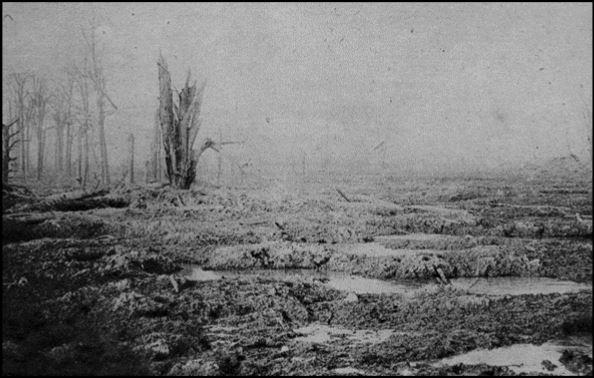
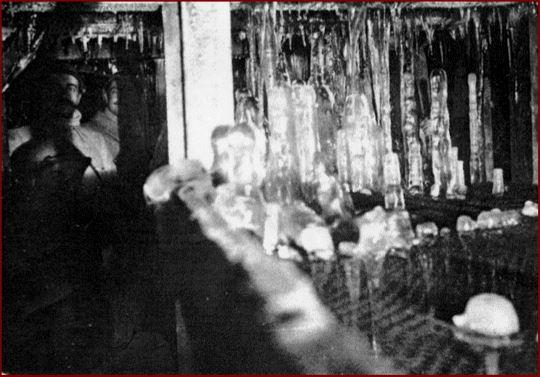
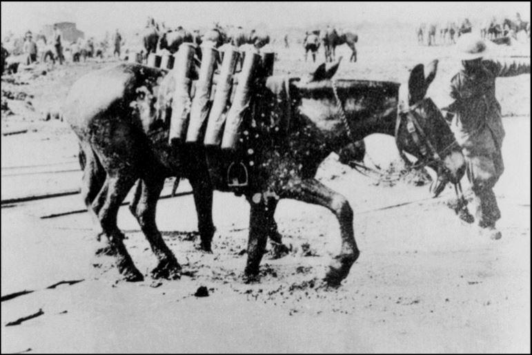
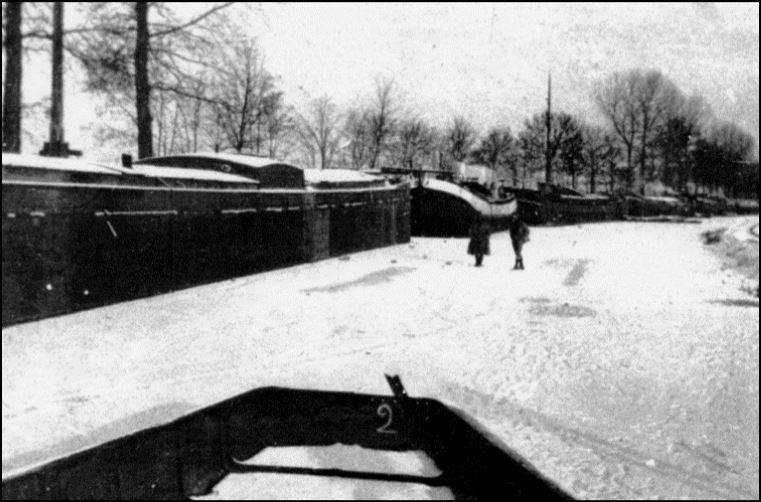
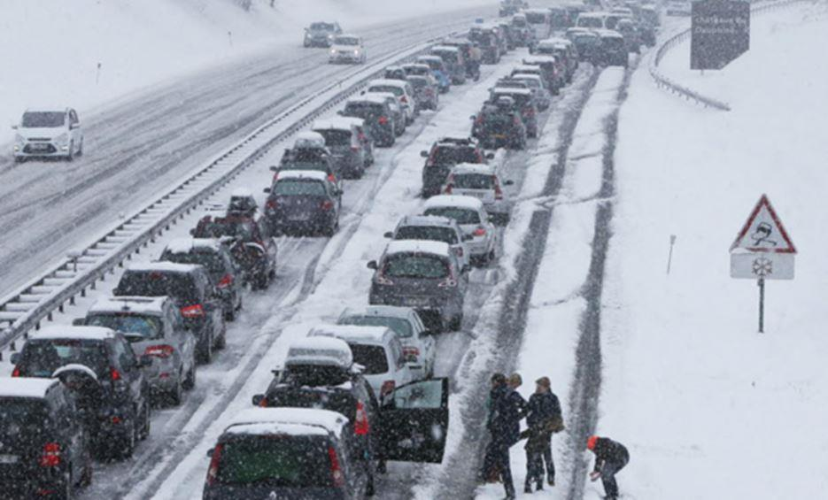
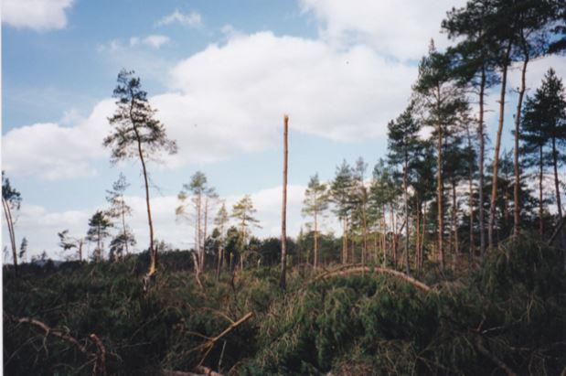
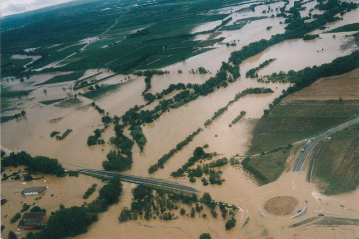
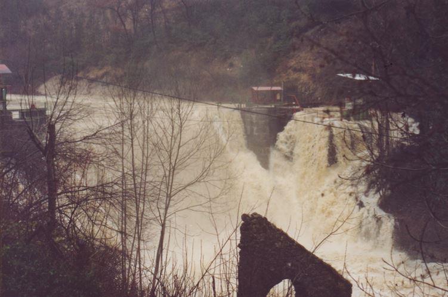

Que nous disent les soldats de la Grande Guerre ?..
De début novembre 1914 à février 1915, dans la région de la célèbre bataille de l’Yser, la pluie ne cesse guère de tomber. (2)
29 novembre 1915. Région de Nancy.
« Hier nous avons mangé du pain gelé et le vin que nous avons touché hier est aujourd’hui rempli de glaçons. Pour couper le pain, c’est tout un travail. Un vieux, qui habite à côté de notre cantonnement, nous a dit qu’il n’avait pas vu hiver si précoce depuis 1870 et que celui-ci commençait exactement comme cette année-là, c’est rassurant ! »
Octobre-novembre-décembre 1915. Région Châlons sur Marne-Toul. Il ne cesse guère de pleuvoir d’octobre à décembre. Les soldats trempent littéralement dans la boue.
Automne 1916 en Meurthe et Moselle : Pluie, brouillard… et boue pour les soldats.
Hiver 1917. Région de Nancy. Fin décembre 1917 au 17 février 1918. « La neige qui depuis fin décembre couvrait le sol est enfin disparue ».

Paysage dans l’Est de la France après les bombardements allemands des mois de novembre-décembre 1914, soit brouillard et pluie jusqu’en février 1915. Tous les trous d’obus se remplissent immédiatement d’eau. Doc. JPP

Stalactites et stalagmites dans un abri contre les obus et les bombes d’avions. Doc. JRC

LRavitaillement en munitions par mulets. Noter la nature du terrain… Doc. BD.
Décembre 1917 - janvier 1918. Péniches sur le canal de la Meuse gelé près de Verdun. Elles servaient d’abri et de repos pour les troupes. Noter que sur la glace, l’on y circule très bien à pied.
16 juillet 1918 vers le chemin des Dames (région de Soissons-Villers Cotterets).
Dans l’après-midi, un orage d’une extrême violence se déclenche. Une sorte de cyclone passant à travers une forêt, sur une largeur de 50 m balaye tout sur son passage. Les arbres les plus gros sont tordus comme des allumettes.

Les péniches sur le canal de la Meuse gelé (région de Verdun). Doc. JRC
Durant la pacification du Maroc (3)
Octobre 1925 dans la plaine de Fez et celle d’Angad (Sud-Est du Rif)
« Du 5 au 10, le bataillon attend l'ordre de départ pour réaliser une opération qui est annulée en raison de la forte pluie mais aussi à cause de difficultés de ravitaillement sur les pistes détrempées, devenues impraticables »
« Le 2è bataillon du 1er REI (Régiment Étranger d’Infanterie) est du côté de Kiffane et une pluie diluvienne s'abat sur la région. A Souk es Sebt, les orages et les pluies n'en finissent plus, les tentes détrempées collent comme du papier, impossible de les monter sur la crête où le vent les emporte. À la fin de la tempête, la pluie reprend avec une régularité exaspérante, c'est monotone et déprimant ».
« Lorsque novembre arrive, le brouillard recouvre bientôt Souk es Sebt, la fièvre et la dysenterie se sont emparées du camp, le médecin demande à l'état-major la relève du bataillon mais sans résultat… Il continue à pleuvoir depuis trois mois. Le pain moisit, l'eau traverse la toile de tente, les hommes ne se donnent plus la peine de nettoyer les armes mouillées qui rouillent, il faudrait recommencer le nettoyage deux heures après.
Les sentinelles sont dans leur boue jusqu'au ventre, les hommes grelottent dans leurs guitounes, assis sur des pierres, les genoux contre la poitrine ».
Contrairement aux idées reçues, les trois récits ci-dessus montrent que le climat du Maroc n’est pas toujours idyllique, ce qui d’ailleurs est aussi vrai pour l’Algérie, voire la Tunisie. Ce constat est intéressant car ce pays, qui judicieusement développe le tourisme, apparaît souvent aux yeux des européens, à travers le filtre des publicités, tel un paradis où le climat est toute l’année comme ils le souhaitent, autrement dit : parfait. Ainsi, nous découvrons avec des yeux effarés qu’il peut geler et neiger à Alger, à Rabat ou à Casablanca et que de violentes tempêtes n’ont rien d’exceptionnel.
Au moins en ce qui concerne le Maroc et l’Algérie, ces récits sont toujours d’actualité, d’autant plus que l’on s‘élève sur les reliefs du Rif, de l’Atlas ou de l’Anti-Atlas.
À cela bien entendu s’ajoute l’influence du désert qui apporte la chaleur mais également de l’océan Atlantique et de la Méditerranée qui eux, apportent l’humidité. De cette manière, l’évolution climatique de l’Afrique du Nord conditionne largement celle de l’Europe dont en particulier la température de la Méditerranée.
Avant de terminer cette énumération que nous avons volontairement limitée, rappelons néanmoins quelques autres faits significatifs comme l’hiver 1956, la sécheresse de 1976 qui débuta dans le centre de la France courant mars pour se terminer courant septembre. N’oublions pas non plus l’hiver 1984-1985 où le thermomètre descendit à -27° dans l’Est Lyonnais, les chutes de neige de l’hiver 1990-1991 avec environ 1 m dans cette même région et bien entendu, la grande tempête du 26 décembre 1999 qui traversa la France d’Ouest en Est sur environ 400 km de largeur.
Parlons également de l’année 2003 qui constitua un record de chaleur et de sécheresse en ce début du XXIè siècle. Naturellement, on pourrait ajouter bien des événements de ce type mais ce qui précède est déjà très significatif des humeurs du climat.
Analyse…
Ces observations sont évidemment très riches d’enseignement car elles présentent deux aspects déterminants pour l’analyse, à savoir :
Une part d’observation contenant des appréciations plus ou moins suggestives.
Une part que nous nommerons scientifique, liée à l’apparition du thermomètre et au début d’un collationnement plus rigoureux des relevés qui permet d’utiles comparaisons d’une situation à une autre.
Par ailleurs, n’oublions pas que la révolution française de 1789 verra la destruction de très nombreux documents de tous ordres qui aujourd’hui, aussi bien pour le sujet qui nous intéresse comme pour d’autres, constitue une action pour le moins fort regrettable.
LA VIE HUMAINE
La vie d’un européen est aujourd’hui de 80 années en moyenne, soit 29 200 journées. Suivant ce que l’on sait, elle était généralement plus courte au siècle dernier et a priori également avant. Par conséquent, cette tranche de vie reste limitée par rapport à un siècle et ne représente déjà pas grand-chose eu égard à un millénaire. Autrement dit, l’appréciation des événements est non seulement suggestive mais doit aussi être considérée puis relativisée par rapport à cet espace de vie humaine.
L’ENVIRONNEMENT SOCIO-ÉCONOMIQUE
-20°C aujourd’hui n’ont évidemment pas les mêmes conséquences qu’il y a trois siècles. L’être humain d’autrefois, plus près de la nature que de nos jours était nécessairement plus résistant aux variations climatiques que son homologue du XXIè siècle qui, en cas de froidure, pour la grande majorité et sans autre souci, ne fera que de tourner dans le bon sens le bouton du radiateur de chauffage.
Autre remarque : lorsque l’encre gelait dans les encriers, tout en restant bien entendu contraignante, les conséquences de cette froidure n’étaient certainement pas les mêmes pour l’individu concerné qu’elles le seraient aujourd’hui, époque pour laquelle une telle situation serait impensable. Que dire si les cartouches de l'imprimante reliée à l'ordinateur gelaient ?.. À ce propos, nous nous souvenons avoir discuté en pleine rue de Bruxelles par 10° de température, bien couvert alors que notre interlocuteur originaire de l’Oural (Russie) était en petite chemise et ne semblait pas autrement affectée par le climat ce jour-là.
En revanche, si l’habitant du moyen âge et même après pouvait rester de longs mois sous les froidures, sans conséquences économiques industrielles majeures, convenons que de nos jours il ne faut pas grand-chose, au moins en France, pour « arrêter la machine» !..
De ce point de vue, notre civilisation apparaît comme bien vulnérable. Un des derniers événements en date, autrement dit le blocage en banlieues Est et Nord de Paris de la circulation automobile et des aéroports locaux durant la nuit du premier week-end de janvier 2003, en constitue un remarquable exemple. Une situation similaire se retrouvera peu de temps après en vallée du Rhône où par précaution, il fallut arrêter la circulation sur l’autoroute A7 sans parler des actualités télévisées durant lesquelles on vit un TGV avec ses passagers remorqué par une ancienne locomotive diesel-électrique car les caténaires pris en givre, s'étaient rompues.
Manifestement, un peu de neige ou de verglas suffisent à paralyser toute la circulation et l’économie locales. Bien entendu, l’on peut argumenter qu’il s’agit là d’un phénomène franco-français récurant.
Cependant, ce serait oublier qu’en Europe si nous devions revivre certaines périodes de l’histoire telles que relatées dans ce chapitre, notre civilisation mécanisée montrerait très rapidement ses limites.
Pour mémoire, rappelons également la sécheresse de 2003 durant laquelle il fallut limiter la puissance de nos centrales nucléaires et même, si la législation avait été appliquée, aurions-nous dû en arrêter purement et simplement bon nombre.
PERCEPTION DES ÉVÉNEMENTS
Au moins jusqu’au début du 20è siècle, la perception des événements climatiques est souvent relatée à travers des constats : les arbres éclatent, le sol est gelé sur 65 cm, la mer Adriatique est prise en glace, dans le Midi, le vignoble est détruit par les gelées, dans le Berry, grande sécheresse durant 7 mois, puits et rivières sont à sec, dans l’Est, les chasselas sont murs dès le 24 juillet, etc.
Malgré leur imprécision et leur aspect suggestif, ces informations traduisent tout de même des phénomènes réels que l'on ne peut guère nier et qui montrent globalement une certaine constance mais aussi des variations dans le temps. Pour beaucoup, les évènements climatiques ont de graves conséquences sur la vie de tous les jours, entraînant fréquemment disettes et maladies. Il est important et judicieux de constater qu’en ces époques, l’homme est à la fois plus endurant que celui du XXIè siècle mais évidemment davantage lié aux cycles naturels.
En revanche, cet homologue du XXIè siècle est devenu en apparence plus indépendant de cette même nature mais plus dépendant de son environnement économico-industriel. Il vit en quelque sorte, dans une sécurité toute relative vis-à-vis des cycles naturels desquels il tente manifestement de s’affranchir. Sur ce point, il ne s’écoule guère de temps sans que l’actualité montre les limites et la fragilité de cet état relatif. Tout se passe comme si de nos jours, nous considérions les phénomènes du passé comme révolus et que nous en soyons définitivement à l’abri si bien que toute calamité naturelle a toutes les chances d’être immédiatement associée à ce changement climatique.
Là, nous sommes manifestement en pleine illusion.
Les trois images ci-dessous issues d’événement récents ayant touché la France, montrent s’il en était encore besoin que nos têtes pensantes n’en sont pas encore à domestiquer le climat même avec encore plus de taxes, heureusement d’ailleurs car cela risquerait fort d’être nettement plus catastrophique que les gaz à effet de serre !.. Quant aux indices boursiers, sans grand risque on peut parier qu’ils ne seront guère affectés, sauf réelles catastrophes climatiques que les dites taxes en tous genres n’empêcheront certainement pas de survenir si tel doit être le cas…

Une partie de la forêt de Fontainebleau après le passage de la tempête du 26 décembre 1999. Noter ce tronc qui ressemble à une grande allumette et dont les banches ont été arrachées.
Photo. JMT

Inondation de la région d’Aramon (départ. du Gard) en septembre 2002.
Document JMT.

Barrage sur le Gland, un affluent du torrent l’Albarine, situé au-dessus de la ville de St. Rambert en Bugey (Départ. de l’Ain). Après plusieurs jours de pluie intensive à l’automne 1990, cet ouvrage datant de la fin du XIXè siècle est totalement submergé par l’eau. Photo. JMT
L’INVENTION DU THERMOMÈTRE
Elle constitue évidemment une importante révolution en matière de météorologie car à travers une base commune, celle du 0° centigrade, il devient alors possible de quantifier les variations de température d’une manière plus rigoureuse.
Ainsi, à partir du début du 18è siècle voit-on apparaître des relevés qui vont s’amplifier à travers le territoire et par là même, introduire la notion de cartographie thermique de l’atmosphère mesurée depuis le sol ou par ballons sondes.
Il est d’ailleurs tout à fait significatif de constater dans le MEMORIAL DE LA METEOROLOGIE NATIONALE, l’augmentation substantielle des commentaires, surtout dès le début du 19è siècle, introduisant aussi la possibilité d’établir des statistiques précises, soit essentiellement : température, pression atmosphérique, hygrométrie, pluviométrie, force et direction du vent.
CLIMAT D’HIER ET D’AUJOURD’HUI
Si l’on observe les variations de température entre les hivers et les étés, en considérant tout ce qui précède, force est de constater qu’au moins jusqu’à la fin du 19è siècle, il existe de grands écarts de température entre la saison hivernale et la saison d’été. Ceci s’atténue quelque peu entre les deux guerres mondiales et manifestement encore plus après la seconde. S’il existe toujours sur le territoire français des minima et des maxima importants, à l’évidence, ceux-ci apparaissent plus brefs que par le passé.
Néanmoins, si nous comparons la période précédant l’utilisation météorologique du thermomètre que nous fixerons globalement de l’an 1000 à l’an 1700, puis la période s’étendant de l’an 1700 à l’an 1900, soit seulement 200 ans, on constate qu’il n’est pas évident que le climat ait beaucoup changé, ceci pour les raisons suivantes :
- Les constats rapportés dans les deux périodes présentent beaucoup de similitudes. L’encre gelait aussi bien dans les encriers au 16è siècle que dans ceux du 19è et les sécheresses étaient aussi longues dans l’une comme dans l’autre période, de même que l’importance des minima ou celle des maximas absolus.
Ce qui a manifestement changé entre ces deux époques, c’est d’abord le mode de vie et le moyen d’appréciation qui s’est rationalisé grâce à l’utilisation d’appareils de mesure de plus en plus perfectionnés mais également la géographie de la France qui évolua sensiblement. En effet, il ne faut surtout pas oublier que certaines régions n’étaient pas dans le royaume.
- Suivant tout ce qui fut précédemment exposé, nous constatons que les événements relatés concernent globalement et d’une manière assez uniforme, l’ensemble du territoire actuel. Les régions de montagne apparaissent moins, en particulier la Savoie car tardivement rattachée à la France (cédée avec Nice en 1860 après un plébiscite).
- Suivant les constats relevés, tels la sécheresse, la neige et le froid, on retrouve sensiblement par thèmes les mêmes régions qu’aujourd’hui, soit :
Sécheresse dans le Centre et les pays de Loire, occasionnellement la Bretagne, l’Est de la France et dans une certaine mesure le Midi.
Neige en basse vallée du Rhône, en Languedoc-Roussillon, sur la Vendée et le Bordelais, en Normandie.
Froid dans l’Est, dans le Centre et dans le Midi qui apparaît souvent affecté.
- En 1783, le début de l’été est caractérisé par des brouillards secs qui n’occasionnent pas de pluie et que certains considèrent « comme une suite aux tremblements de terre de la Sicile et de la Calabre » .
Cette information est intéressante, il convient de la garder en mémoire. En réalité, Ce phénomène serait due à une très forte éruption volcanique dont les cendres projetées à haute altitude auraient favorisé cette sécheresse par effet de serre.
En résumé, si l’on considère uniquement que des critères météorologiques et en prenant le risque de bouleverser quelques idées reçues, à ce stade de notre étude, rien ne permet encore de dire qu’entre le début et la fin du précédent millénaire les phénomènes climatiques sur le territoire qui constitue aujourd’hui la France aient beaucoup évolué.
En revanche, au regard des constats antérieurs et à celui des relevés modernes, il semble que les choses aient effectivement commencé à changer vers le début du 20è siècle pour, dans une certaine mesure, s’accélérer après la seconde guerre mondiale et surtout au-delà des années 50 mais à l’échelle des temps cela est-il nécessairement significatif ? Par conséquent, ce constat ne peut guère prouver que l’activité humaine soit déterminante au sein de cette évolution.
Pour finir, quelque chose de nouveau sous le soleil ?..
Conclusion
Si depuis plusieurs décennies évolution du climat il y a, il est de toute manière certaine que ce ne sont pas les taxes en tous genres, les éoliennes et autres panneaux solaires qui vont changer grand-chose, pas plus que le passage à l’essence au lieu de conserver le gazole pour nos automobiles, sans aborder les éclairages à basse consommation pour lesquels il y aurait là aussi beaucoup à dire dont en ce qui concerne le mercure contenu. Sans doute, serait-il plus urgent de commencer par sérieusement se pencher sur la déforestation planétaire dont celle du tour de la Méditerranée, sur la pollution des mers comme des océans qui modifient à coup sûr et très rapidement l’albédo (réflexion solaire) et nos choix en matière de transport. En particulier, les grands aéronefs, les bateaux de fret et de croisière, les camions et les cars, etc. qui sillonnent par dizaines de milliers et beaucoup plus, le ciel, les mers et la Terre comme nos agglomérations mais dont on ne parle guère autrement qu’en termes d’indices boursiers.
Précisément, concernant ces derniers il est fort douteux qu’ils puissent être affectés négativement d’une manière ou d’une autre par toute initiative judicieuse et efficace en faveur du climat, sauf à en accélérer encore la croissance et donc les bénéfices pour les actionnaires.
Barrage sur le Gland, un affluent du torrent l’Albarine, situé au-dessus de la ville de St. Rambert en Bugey (Départ. de l’Ain). Après plusieurs jours de pluie intensive à l’automne 1990, cet ouvrage datant de la fin du XIXè siècle est totalement submergé par l’eau.
Photo. JMT
En termes plus clairs, on ne voit donc pas ce qui empêchera les avions commerciaux (4) comme les appareils militaires de voler de plus en plus, les énormes bateaux de fret ou de croisière de voguer également toujours davantage, les camions comme les autocars de circuler de même et les lignes de chemins de fer non rentables de disparaître comme les voies navigables pour les marchandises, ceci au profit des autoroutes à péage et de toujours plus de camions et autres engins à pétrole… rentabilité oblige !
Pas plus de continuer à bétonner et à goudronner, à construire de même y compris dans les lieux inondables comme sur des pentes instables, en extrêmes bords de mer et d’océans, etc. un peu partout puis de nous alarmer dès que la nature veut reprendre ses droits. Toutefois, faire et défaire c’est toujours travailler et ainsi permettre au commerce et à l’argent de circuler, surtout au bénéfice de certains.
Cependant, malgré notre technologie toujours plus avancée, si notre civilisation dite moderne devait subir certains des phénomènes précédemment décrits, il n’y aurait alors aucun mal à comprendre que plus nous nous éloignons des lois de la nature, plus nous devenons aussi de plus en plus fragiles. Ici encore, l’Histoire des civilisations est oubliée au profit de la seule finance…
Pour terminer, sans néanmoins préjuger de quoi que ce soit, suggérons cependant à tous ceux pour lesquels le changement climatique serait susceptible de perturber le sommeil, de consulter les paramètres de Milutin Milankovič… Sauf naturellement, à estimer que les humeurs ancestrales du climat doivent désormais être absolument maîtrisées et uniformisées pour notre confort.
J-M. T.
NOTES
(1) Extrait des CARNETS DE René CLERGEAU et des CAHIERS DE Paul MENCIER - La Grande Guerre au jour le jour de 1914 à 1919 (Transcription de Jean-Marc TRUCHET).
(2) C’est durant la bataille de l’Yser en octobre/novembre 1914 que les Allemands utiliseront pour la première fois à grande échelle un gaz de combat à base de sulfure d’éthyle dichloré qui, en 1917 lors de la bataille d’Ypres, prendra le nom d’Ypérite. Durant ce conflit, les gaz de combat feront environ 500 000 morts côté Français et alliés, soit près d’un quart des pertes humaines sans compter tous ceux qui périrent plus tard, les poumons rongés.
(3) LA LEGION ET LES SPAHIS DANS LA CONQUETE DU MAROC - La guerre du Rif 1921 - 1926 (François GARIJO - Transcription Jean-Marc TRUCHET).
(4) 70 à 75 % des sièges sont occupés par des touristes. Va-t-on les empêcher de partir en vacances comme avec les énormes bateaux de croisière ?..
Partager cette page